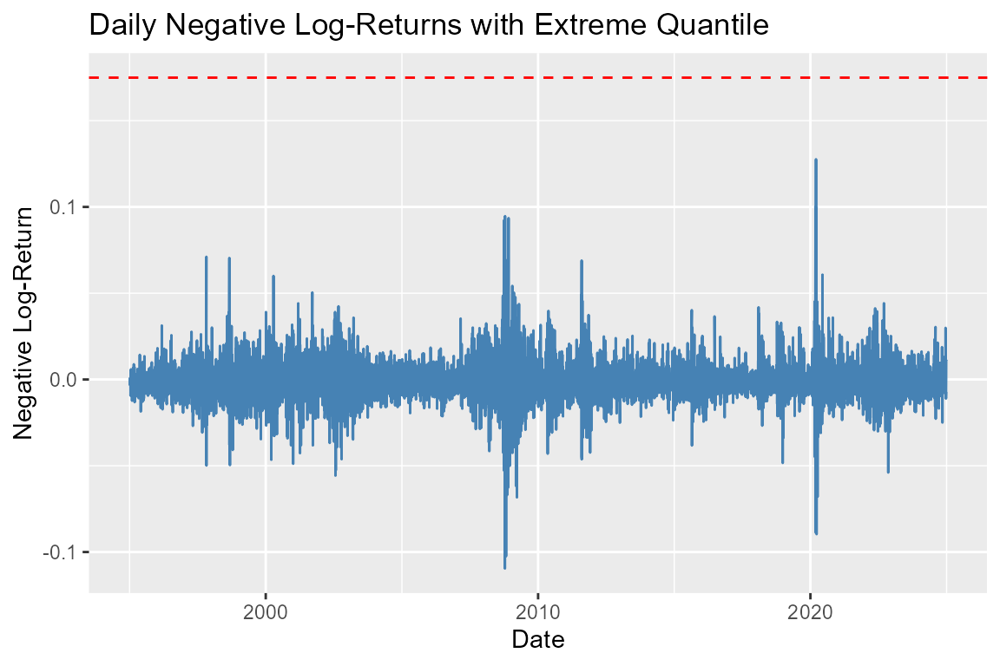

Introduction
The maxbootR package provides fast and user-friendly
tools for block-based bootstrapping of extreme value statistics.
It supports disjoint, sliding, and circular block schemes, powered by
C++ backends via Rcpp for speed and scalability.
In this vignette, we demonstrate typical workflows for:
- Estimating extreme quantiles of log-return data from finance
- Estimating 100-year return levels from temperature data in climatology
These case studies include the core steps:
- Extracting different types of block maxima
- Applying the
maxbootR()bootstrap estimation function
Case Study 1: Log Returns from the S&P 500 Index
We begin by inspecting the dataset logret_data, included
in this package.
head(logret_data)
#> # A tibble: 6 × 2
#> day neg_log_ret
#> <date> <dbl>
#> 1 1995-01-04 -0.00348
#> 2 1995-01-05 0.000803
#> 3 1995-01-06 -0.000738
#> 4 1995-01-09 -0.000326
#> 5 1995-01-10 -0.00184
#> 6 1995-01-11 0.0000433
tail(logret_data)
#> # A tibble: 6 × 2
#> day neg_log_ret
#> <date> <dbl>
#> 1 2024-12-20 -0.0108
#> 2 2024-12-23 -0.00726
#> 3 2024-12-24 -0.0110
#> 4 2024-12-26 0.000406
#> 5 2024-12-27 0.0111
#> 6 2024-12-30 0.0108
help("logret_data")It contains daily negative log returns of the S&P 500 stock market index from 1995 to 2024.
We are interested in estimating the 0.99 quantile of the
maximum yearly negative log returns.
Before diving in, let’s visualize the raw data to check for completeness
and any anomalies.
length(logret_data$day) / 30 # approx. number of years
#> [1] 251.6667
sum(is.na(logret_data$neg_log_ret)) # number of missing values
#> [1] 0The data appears complete and contains no missing values.
Extracting Block Maxima
We set the block size to 250 (approx. number of trading days per year) and compute both disjoint and sliding block maxima.
bsize <- 250
bm_db <- blockmax(logret_data$neg_log_ret, block_size = bsize, type = "db")
#> Warning in blockmax(logret_data$neg_log_ret, block_size = bsize, type = "db"):
#> The block size does not divide the sample size. The final block is handled
#> dynamically.
bm_sb <- blockmax(logret_data$neg_log_ret, block_size = bsize, type = "sb")
#> Warning in blockmax(logret_data$neg_log_ret, block_size = bsize, type = "sb"):
#> The block size does not divide the sample size. The final block is handled
#> dynamically.
# Time vector per block type
day_db <- logret_data$day[seq(1, length(bm_db) * bsize, by = bsize)]
day_sb <- logret_data$day[1:length(bm_sb)]
# Combine into tidy tibble
df_db <- tibble(day = day_db, value = bm_db, method = "Disjoint Blocks")
df_sb <- tibble(day = day_sb, value = bm_sb, method = "Sliding Blocks")
df_all <- bind_rows(df_db, df_sb)
# Plot
ggplot(df_all, aes(x = day, y = value)) +
geom_line(color = "steelblue") +
facet_wrap(~ method, nrow = 1) +
labs(title = "Block Maxima of Negative Log-Returns",
x = "Date", y = "Block Maximum")Bootstrap Estimation of the 0.99 Quantile
We now bootstrap the 0.99 quantile of the yearly maxima using both
disjoint and sliding block methods.
To understand expected quantile behavior, we also bootstrap the
shape parameter of the fitted Generalized Extreme Value
(GEV) distribution.
bst.bm_db_gev <- maxbootr(
xx = logret_data$neg_log_ret, est = "gev", block_size = 250,
B = 1000, type = "db"
)
#> Warning in blockmax(xx, block_size, type = "db"): The block size does not
#> divide the sample size. The final block is handled dynamically.
summary(bst.bm_db_gev[, 3])
#> Min. 1st Qu. Median Mean 3rd Qu. Max.
#> -0.6065 0.2234 0.3210 0.3411 0.4291 1.1869
bst.bm_sb_gev <- maxbootr(
xx = logret_data$neg_log_ret, est = "gev", block_size = 250,
B = 1000, type = "sb"
)
#> Warning in blockmax(xx, block_size, type = "cb"): The block size does not
#> divide the sample size. The final block is handled dynamically.
summary(bst.bm_sb_gev[, 3])
#> Min. 1st Qu. Median Mean 3rd Qu. Max.
#> -0.1518 0.2294 0.3149 0.3283 0.4055 1.0318These estimates reveal heavy tails:
In both cases, the median shape parameter is > 0.3, indicating that
large extremes are expected – this motivates trimming in the next
step.
Bootstrapping the 0.99 Quantile
bst.bm_db_q <- maxbootr(
xx = logret_data$neg_log_ret, est = "quantile", block_size = 250,
B = 1000, type = "db", p = 0.99
)
#> Warning in blockmax(xx, block_size, type = "db"): The block size does not
#> divide the sample size. The final block is handled dynamically.
summary(bst.bm_db_q)
#> V1
#> Min. :0.04382
#> 1st Qu.:0.14031
#> Median :0.17633
#> Mean :0.21232
#> 3rd Qu.:0.22586
#> Max. :1.87622
bst.bm_sb_q <- maxbootr(
xx = logret_data$neg_log_ret, est = "quantile", block_size = 250,
B = 1000, type = "sb", p = 0.99
)
#> Warning in blockmax(xx, block_size, type = "cb"): The block size does not
#> divide the sample size. The final block is handled dynamically.
summary(bst.bm_sb_q)
#> V1
#> Min. :0.07626
#> 1st Qu.:0.14480
#> Median :0.17611
#> Mean :0.19415
#> 3rd Qu.:0.21240
#> Max. :1.17018The distribution is right-skewed and contains some
high values due to large shape parameters.
We truncate the bootstrap replicates at the 98% quantile to visualize
and compare the main mass of the distribution.
# Trim upper 2% of bootstrap replicates
bst.bm_db_q_trimmed <- bst.bm_db_q[bst.bm_db_q < quantile(bst.bm_db_q, 0.98)]
bst.bm_sb_q_trimmed <- bst.bm_sb_q[bst.bm_sb_q < quantile(bst.bm_sb_q, 0.98)]
# Combine for plotting
df_q <- tibble(
value = c(bst.bm_db_q_trimmed, bst.bm_sb_q_trimmed),
method = c(rep("Disjoint Blocks", length(bst.bm_db_q_trimmed)),
rep("Sliding Blocks", length(bst.bm_sb_q_trimmed)))
)
# Histogram plot
ggplot(df_q, aes(x = value)) +
geom_histogram(fill = "steelblue", color = "white", bins = 30) +
facet_wrap(~ method, nrow = 1) +
labs(
title = "Bootstrap Estimates of Extreme Quantile",
x = "Estimated Quantile",
y = "Count"
)Comparing Variance of Bootstrap Replicates
The variance ratio is around 0.43, indicating that the sliding block approach results in considerably lower estimation uncertainty.
Visualizing the Bootstrap Quantile on the Time Series
We now visualize the original time series and overlay the median of the bootstrapped 0.99 quantile (from sliding blocks).
q99 <- quantile(bst.bm_sb_q_trimmed, 0.5)
ggplot(logret_data, aes(x = day, y = neg_log_ret)) +
geom_line(color = "steelblue") +
geom_hline(yintercept = q99, color = "red", linetype = "dashed") +
labs(
title = "Daily Negative Log-Returns with Extreme Quantile",
x = "Date",
y = "Negative Log-Return"
)
The large distance between observed returns and the 99% quantile reflects the rather small observation window of 30 years, if one estimates the 99% quantile.
Case Study 2: Maximal Temperature at Hohenpeißenberg
For the second case study, we follow a similar routine with analogous steps.
head(temp_data)
#> # A tibble: 6 × 2
#> day temp
#> <date> <dbl>
#> 1 1879-01-01 7.1
#> 2 1879-01-02 8
#> 3 1879-01-03 5.6
#> 4 1879-01-04 5.2
#> 5 1879-01-05 0.4
#> 6 1879-01-06 -2.7
tail(temp_data)
#> # A tibble: 6 × 2
#> day temp
#> <date> <dbl>
#> 1 2023-12-26 8.8
#> 2 2023-12-27 13.1
#> 3 2023-12-28 10.5
#> 4 2023-12-29 8.2
#> 5 2023-12-30 9.4
#> 6 2023-12-31 9.2
help("temp_data")The dataset contains daily temperature measurements from the Hohenpeißenberg weather station in Germany, covering the years 1878 to 2023 (145 years).
We are interested in estimating the 100-year return level of daily
temperatures.
The data is highly non-stationary, which can be seen in the following
time series plots:
temp_data %>%
filter(lubridate::year(day) %in% c(1900, 1901, 1902)) %>%
ggplot(aes(x = day, y = temp)) +
geom_line(color = "steelblue")To mitigate non-stationarity, we extract only the summer
months.
While this has little impact on the disjoint block bootstrap, it
significantly improves the performance of the sliding block method.
Extracting Block Maxima
Since we restrict to summer months, we use a block size of 92 days (approximate length of summer).
bsize <- 92
bm_db_temp <- blockmax(temp_data_cl$temp, block_size = bsize, type = "db")
bm_sb_temp <- blockmax(temp_data_cl$temp, block_size = bsize, type = "sb")
# Create time vectors for plotting
day_db_temp <- temp_data_cl$day[seq(1, length(bm_db_temp) * bsize, by = bsize)]
day_sb_temp <- temp_data_cl$day[1:length(bm_sb_temp)]
# Create tidy tibble for plotting
df_db_temp <- tibble(day = day_db_temp, value = bm_db_temp, method = "Disjoint Blocks")
df_sb_temp <- tibble(day = day_sb_temp, value = bm_sb_temp, method = "Sliding Blocks")
df_all_temp <- bind_rows(df_db_temp, df_sb_temp)
# Plot block maxima
ggplot(df_all_temp, aes(x = day, y = value)) +
geom_line(color = "steelblue") +
facet_wrap(~ method, nrow = 1) +
labs(title = "Block Maxima of Summer Temperatures",
x = "Date", y = "Block Maximum")Bootstrapping Return Levels
We proceed directly with estimating the 100-year return level via bootstrapping.
bst.bm_db_temp_q <- maxbootr(
xx = temp_data_cl$temp, est = "rl", block_size = bsize,
B = 1000, type = "db", annuity = 100
)
summary(bst.bm_db_temp_q)
#> V1
#> Min. :32.09
#> 1st Qu.:33.05
#> Median :33.32
#> Mean :33.32
#> 3rd Qu.:33.59
#> Max. :34.76
bst.bm_sb_temp_q <- maxbootr(
xx = temp_data_cl$temp, est = "rl", block_size = bsize,
B = 1000, type = "sb", annuity = 100
)
summary(bst.bm_sb_temp_q)
#> V1
#> Min. :31.63
#> 1st Qu.:32.84
#> Median :33.09
#> Mean :33.08
#> 3rd Qu.:33.33
#> Max. :34.31We visualize the resulting bootstrap distributions using histograms.
# Combine for plotting
df_q_temp <- tibble(
value = c(bst.bm_db_temp_q, bst.bm_sb_temp_q),
method = c(rep("Disjoint Blocks", length(bst.bm_db_temp_q)),
rep("Sliding Blocks", length(bst.bm_sb_temp_q)))
)
# Histogram plot
ggplot(df_q_temp, aes(x = value)) +
geom_histogram(fill = "steelblue", color = "white", bins = 30) +
facet_wrap(~ method, nrow = 1) +
labs(
title = "Bootstrap Estimates of 100-Year Return Level",
x = "Estimated Return Level",
y = "Count"
)Comparing Variance of Bootstrap Replicates
# Compute and display variance ratio
var(bst.bm_sb_temp_q) / var(bst.bm_db_temp_q)
#> [,1]
#> [1,] 0.8494002The variance ratio is approximately 0.85, indicating that the sliding block bootstrap reduces estimation variance compared to the disjoint approach.